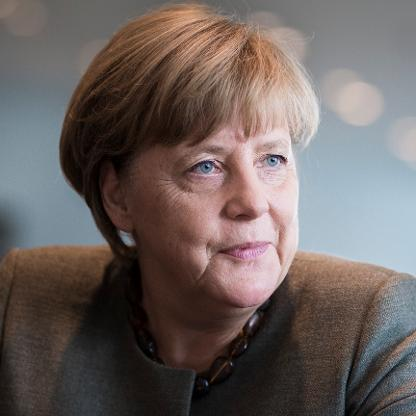

Hello!
WELCOME TO OUR WEBSITE


Germany is a country in Central and Western Europe, lying between the Baltic and North Seas to the north and the Alps, Lake Constance, and the High Rhine to the south. It borders Denmark to the north, Poland and the Czech Republic to the east, Austria and Switzerland to the south, France to the southwest, and Luxembourg, Belgium, and the Netherlands to the west. Disarmament, arms control and non-proliferation play an important role in Germany’s foreign and security policy. Germany works with its partners, particularly in the EU and NATO, to strengthen and further develop existing international treaties. New challenges to security and new technological developments are creating the need to develop new international rules, something which the Federal Government Commissioner for Disarmament and Arms Control Ms Patricia Flor actively works to achieve. Besides analysing and developing new aspects of disarmament and non-proliferation policy, the Commissioner is very active in helping with the implementation, further development and strengthening of existing international agreements and coordination mechanisms. These particularly include the “Treaty on the Non-Proliferation of Nuclear Weapons”, the “Comprehensive Nuclear Test-Ban Treaty”, and the “International Code of Conduct against Ballistic Missile Proliferation.” The “Treaty on the Non-Proliferation of Nuclear Weapons” (NPT) of 1968 is the foundation of the international nuclear non-proliferation and disarmament regime. From the Federal German government’s point of view, maintaining a balance between the three pillars of the NPT – nuclear disarmament, a strengthened non-proliferation regime and the peaceful use of nuclear energy – is the central challenge. This also involves promo-ting the universalisation of the treaty and appealing to India, Pakistan, Israel and South Sudan to accede to the treaty. treaty is under great pressure, as shown by the example of North Korea, which conducted its sixth nuclear test on 12 September 2017. Discussions on holding a conference to create a WMD free zone in the Middle are also putting strain on the NPT. One of the reasons for the termination of the 9th Review Conference (27 April to 22 May 2015) without a new consensus was this unresolved issue. In the German Government’s view, the necessary strengthening of the treaty regime, particularly through consistent implementation of the Action Plan adopted by the 2010 Review Conference, remains a crucial goal. In this context, Germany is committed to a strong profile for the EU, but is also engaged with like-minded partners from other regions of the world. The goal must be to strengthen the NPT with new initiatives. Germany pressurises Iran to stop violating the JCPOA which they have been doing since the past few days. We expect Iran to return to full compliance with the commitments made in the deal. Germany requests the committee to also support a Radiological Weapons Convention. Germany also urges all the countries of the world to ratify the Treaty on the Prevention of Nuclear Weapons and work towards a world with no Weapons of Mass Destruction.
Angela Merkel was born in Hamburg in then-West Germany and moved to East Germany as an infant when her father, a Lutheran clergyman, received a pastorate in Perleberg. She obtained a doctorate in quantum chemistry in 1986 and worked as a research scientist until 1989. Angela Merkel entered politics in the wake of the Revolutions of 1989, and briefly served as a deputy spokesperson for the first democratically elected East German Government headed by Lothar de Maizière in 1990. Following German reunification in 1990, Angela Merkel was elected to the Bundestag for the state of Mecklenburg-Vorpommern, and has been reelected ever since. As the protégée of Chancellor Helmut Kohl, Angela Merkel was appointed as the Federal Minister for Women and Youth in Kohl's government in 1991, and became the Federal Minister for the Environment, Nature Conservation and Nuclear Safety in 1994. After her party lost the federal election in 1998, Merkel was elected Secretary-General of the CDU before becoming the party's first female leader two years later in the aftermath of a donations scandal that toppled Wolfgang Schäuble. Following the 2005 federal election, Merkel was appointed Germany's first female chancellor at the head of a grand coalition consisting of the CDU, its Bavarian sister party the Christian Social Union (CSU), and the Social Democratic Party of Germany (SPD). In the 2009 federal election the CDU obtained the largest share of the vote, and Merkel was able to form a coalition government with the Free Democratic Party (FDP). At the 2013 federal election, Merkel's CDU won a landslide victory with 41.5% of the vote and formed a second grand coalition with the SPD, after the FDP lost all of its representation in the Bundestag. After the 2017 federal election the CDU was again the largest party, and she was reelected to her fourth term on 14 March 2018.
The German Federal Election System regulates the election of the members of the national parliament, called Bundestag. According to the principles governing the elections laws, set down in Art. 38 of German Basic Law, elections are to be universal, direct, free, equal, and secret. Furthermore, the German Basic Law stipulates that Bundestag elections are to take place every four years and that one can vote, and be elected, upon reaching the age of 18. All other stipulations for the federal elections are regulated by the Federal Electoral Act. Elections always take place on a Sunday. Mail votes are possible upon application. Germans elect their members of parliament with two votes. The first vote is for a direct candidate, who ought to receive a plurality vote in their electoral district. The second vote is used to elect a party list in each state as established by its respective party caucus. The Bundestag comprises seats representing each electoral district, with the remainder of seats being allocated to maintain proportionality based on the second vote. Common practice is that direct candidates are also placed on the electoral lists at higher rankings as a fall-back if they do not win their districts. An election is general, if basically every citizen can take part in it: there are no restrictions such as in terms of income, sex, health or any other arbitrary distinctions. But according to the jurisdiction of the Federal Constitutional Court, the prescription of a minimum voting age is compatible with the commonalty of the election. The exclusion from the active right to vote is also – within narrow limitations – consistent with the Basic Constitutional Law. The exclusion of the passive right to vote is governed by somewhat less strict regulations. For electoral lawmaking the most difficult part in terms of constitutional principles is the equality of the election. On the one hand, certain inequalities are unavoidable as the constituencies can not be of exactly equal size and the turnout, too, is not homogenous. On the other hand, the “Überhangmandate” (the "overhang", or extra seats in Parliament a party gets due to gaining more constituency seats than it is entitled to according to Parliament's proportional seating principle) and a “negatives Stimmgewicht” (negative vote value: an unwanted outcome changing an elector's vote to the opposite of their intended political will expressed with that vote) might influence the “one man, one vote” principle. On 3 July 2008, the Federal Constitutional Court declared the paradox of the “negatives Stimmgewicht”, which is still in effect, to be unconstitutional. For this reason election law has to be changed by 30 June 2011 so that a negative vote value will no longer be possible.
Email your queries at- shreyasp@myself.com
Creators- Shreyas P Manu & CH Sai Srinivas